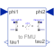

SpringInput/output block of a spring model |

|
Diagram
{kind=link}
Information
This information is part of the Modelica Standard Library maintained by the Modelica Association.
A linear 1D rotational spring with pure signal interface which can be applied for a FMU (Functional Mock-up Unit) exchange.
Parameters (2)
| c |
Value: 1e4 Type: RotationalSpringConstant (N·m/rad) Description: Spring constant |
|---|---|
| phi_rel0 |
Value: 0 Type: Angle (rad) Description: Unstretched spring angle |
Connectors (4)
| phi1 |
Type: RealInput Description: Angle of left flange of force element |
|
|---|---|---|
| tau1 |
Type: RealOutput Description: Torque generated by the force element |
|
| phi2 |
Type: RealInput Description: Angle of right flange of force element |
|
| tau2 |
Type: RealOutput Description: Torque generated by the force element |
Components (3)
| angleToTorque1 |
Type: AngleToTorqueAdaptor |
|
|---|---|---|
| spring |
Type: Spring |
|
| angleToTorque2 |
Type: AngleToTorqueAdaptor |
Used in Examples (1)
|
Modelica.Mechanics.Rotational.Examples Example to demonstrate variants to generate FMUs (Functional Mock-up Units) |